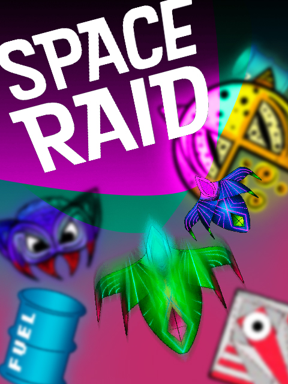

Space Raid
A new look of River Raid for Atari, with local Multiplayer 
O Jogo
Recriação do clássico River Raid do Atari, ambientado em um mundo futurista. Space Raid é uma corrida disputada por dois jogadores locais inspirado na mesma jogabilidade de River Raid. Ultrapasse obstáculos e inimigos, seja mais rápido que seu oponente e não esqueça de reabastecer sua nave.
Estória
Em um futuro longínquo, a raça humana descobriu formas de usar recursos naturais para construir veículos espaciais e em suas explorações descobriu novos materiais que lhes permitiram alcançar distâncias ainda maiores em suas jornadas. As primeiras viagens de exploração foram encabeçadas por dois pesquisadores pioneiros, Space Raid conta algumas de suas desventuras em diferentes mundos em momentos de fuga que entraram para a história dos viajantes espaciais.
Condições de Vitória/Derrota
- O primeiro jogador que chegar na linha de chegada
- Um jogador morrer por colisão nas margens do rio
- Um jogador morrer por colisão com a nave inimiga
- Um jogador ficar sem combustível
- Um jogador fazer seu oponente sair da tela
Controles do Teclado
Jogador 1: Movimentação: WAD, Tiro: Espaço
Jogador 2: Movimentação: Setas, Tiro: 0
Engine
Construct 2
Equipe
- @csampaio - Claudio Sampaio
- Jorge Zero
- Felipe Lobo